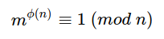
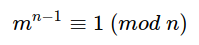
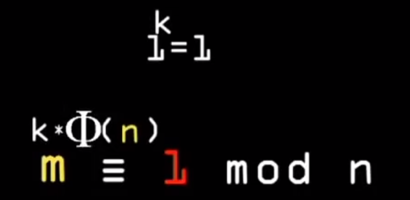
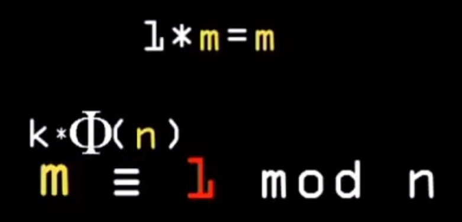
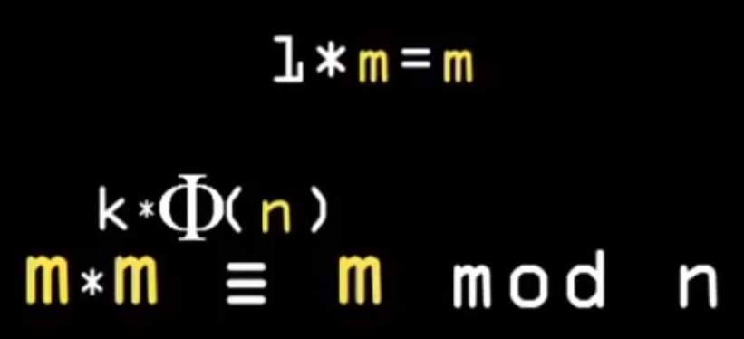
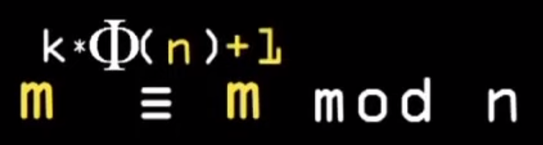
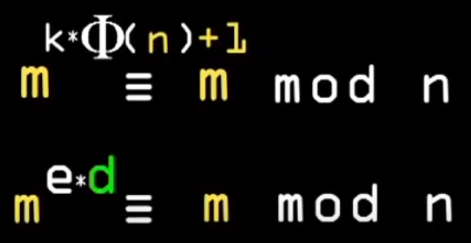
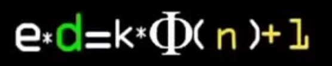
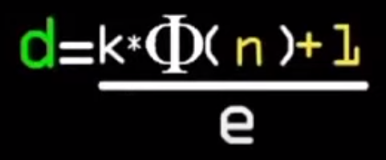

Откуда растёт RSA ?
Введение
Итак сегодня мы попробуем понять откуда беруться и как и почему работают эти волшебные формулы возведения в степень по модулю ассиметричного шифрования RSA.
Итак предлагаю пробежатся по алгоритму RSA на от википедии https://ru.wikipedia.org/wiki/RSA и освежить его в нашей памяти, чтобы иметь привязку к деталям алгоритма в голове, можете пропустить если уже привязались:
Алгоритм создания открытого и секретного ключей RSA-ключи генерируются следующим образом:
1) выбираются два различных случайных простых числа p и q заданного размера (например, 1024 бита каждое);
2) вычисляется их произведение n=p * q, которое называется модулем; 3) вычисляется значение функции Эйлера от числа n:
φ(n)=(p-1) * (q-1) 4) выбирается целое число e (1<e< φ(n)), взаимно простое со значением функции φ(n); число e называется открытой экспонентой (англ. public exponent); обычно в качестве e берут простые числа, содержащие небольшое количество единичных бит в двоичной записи, например, простые из чисел Ферма: 17, 257 или 65537, так как в этом случае время, необходимое для шифрования с использованием быстрого возведения в степень, будет меньше; слишком малые значения e, например 3, потенциально могут ослабить безопасность схемы RSA.
5) вычисляется число d, мультипликативно обратное к числу e по модулю φ(n), то есть число, удовлетворяющее сравнению:
d * e ≡ (mod φ(n))
(число d называется секретной экспонентой; обычно оно вычисляется при помощи расширенного алгоритма Евклида);
6) пара (e,n) публикуется в качестве открытого ключа RSA (англ. RSA public key);
7) пара (d,n) играет роль закрытого ключа RSA (англ. RSA private key) и держится в секрете.Алгоритм шифрования:
Взять открытый ключ (e,n) Алисы Взять открытый текст m Зашифровать сообщение с использованием открытого ключа Алисы: c=E(m)=mᵉ mod n
Алгоритм расшифрования:
Принять зашифрованное сообщение c Взять свой закрытый ключ (d,n) Применить закрытый ключ для расшифрования сообщения: m=D(c)=cᵈ mod n
Формула шифрования дешифрования.
И так не будем пока вникать в генерацию ключей, а посмотрим на формулы шифрования, дешифрования.
Формула шифрования выглядит так c=E(m)=mᵉ mod n . Итак “m” - это открытый текст, “e” - это ключ, “n” -
это наш модуль произведения p*q двух простых чисел, “c” - шифротекст.
Возможно тут вопросов пока не возникает, мы видим какуюто странную формулу шифрования которую выдумал автор алгоритма RSA. В ней мы возводим наш открытый текст в степень “e” - (открытый ключ) и получаем остаток по модулю “n” который и будет нашим шифротекстом - “с”.
Но как мы знаем асинхронный алгоритм шифрования работает так что шифруем мы одним ключом(открытым) а расшифровываем другим (закрытым). Хорошо давайте взглянем на формулу дешифровки m=D(c)=cᵈ mod n.
Что мы можем тут понять ? Если мы возьмем шифротекст “с” возведем его в степень “d” - наш закрытый ключ и найдем остаток по модулю “n” то получится наш исходный открытый текст.
Формулы понятны они работают, но как так получается ?
Давайте попробуем разобраться, для начала запишем формулу шифрования и дешифрования в одну строку: (mᵉ mod n = с)ᵈ mod n = m
Теперь упростим ее и получим такую формулу: mᵉᵈ mod n = m
Стало понятно что открытый текст возведеный в степень (открытый ключ)*(закрытый ключ) по модулю “n” равен остатку - который будет равен исходному открытому тексту.
Хорошо, но что это за волшебные “e” и “d” и модуль “n” и почему так работает что после возведения в степень и находждения остатка по модулю он равен исходному возводимому числу ?
Теорема Эйлера и Ферма.
Ответы кроются в теоремах Эйлера и малой теореме Ферма, давайте немного отвлекемся от алгоритма RSA и попробуем разобраться с ними:
Если n и m взаимно просты, то  где φ(n) - функция Эйлера.
Важным следствием теоремы Эйлера для случая простого модуля является малая теорема Ферма:
Если m не делится на простое число n, то 
Тоесть, если наш модуль “n” простое число и не имеет общих делителей с “m” любое число, а так как простые числа делятся только на единицу и на себя то “n” с “m” не будут иметь общих делителей. В таких условиях всегда будет работать уравнение - и φ(n) для данного случая будет равен n - 1.
Механизм, зависимость, правило называйте как хотите, кроетца в этой формуле из теоремы Ферма.
Давайте теперь разберемся как из этой формулы вытекают наши “операции” шифрования дешифрования с участием ключей - mᵉᵈ mod n = m или развёрнуто (mᵉ mod n = с)ᵈ mod n = m
Получаем mᵉᵈ mod n = m из уравнения Ферма.
Единица в любой стенпени k равна единице, тогда мы можем домножить степень на k и наше равенство не измениться.

Единица домноженная на число «m» (не в степени) будем равна числу «m». (Нижнее уравнение еще не домноженно на «m».)

Тогда если мы домнажаем слева то и справа тоже будет «m».

Тогда можно заменить заменить домнажение «m*m», прибавлением +1 к степени.

Теперь нужно привести к нашу формулу к нашему сокращенному уравнению шифрования/дешифрования mᵉᵈ mod n = m (на картинке записано немного по другому через конгруэнтность - тройное равно (равенство остатков)):

Напишем такое равенство где наши ключи ed равны φ(n) домноженной на коэффицент k и прибавленной +1 (чтобы формула была конгруэнтна по остатку т.е m возводимая в степень по модулю была равна самому себе):

Теперь можно вычислить d сгенерировав e отсюда и проистекает зависимость:

d будет закрытым ключом.
Криптоустойчивость
Хорошо если мы знаем открытый ключ e знаем модуль n легко ли найти φ(n) ? В нашем случае φ(n)=(p-1)(q-1) это два огромных простых числа которые перемножены и нам надо разложить n на p и q чтобы вычислить φ(n)=(p-1)(q-1). В этом и заключается сложность алгоритма, и те слова когда вы слышите что “Устойчивость RSA зависит от алгоритмов разложения на множители.”.
Материалы статьи:
- https://www.youtube.com/watch?v=VUPoIyvJdGI
- http://www.michurin.net/computer-science/rsa.html
- https://ru.wikipedia.org/wiki/RSA